"Ehhh, o que é que há, velhinho?"
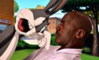
Os Looney Tunes da Warner Bros., sob o comando criativo do cineasta Ivan Reitman, disparam rumo ao futuro no seu primeiro longa-metragem: Space Jam, uma mistura de animação e live-action que junta o astro do esporte Michael Jordan e o clássico espertalhão Pernalonga (Bugs Bunny).
O público vai viajar entre a Terra e o espaço sideral, entre a quadra de basquete, o campo de beisebol e a Terra dos Looney Tunes. São cenas com alguns dos maiores astros da NBA e uma animação 2D e 3D riquíssima, na companhia do gênio mais divertido do basquete e do coelho mais descolado que já pisou numa quadra.
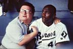
Ivan Reitman produz e Joe Pytka dirige. Joe Medjuck e Daniel Goldberg também são produtores, e o roteiro é de Steve Rudnick & Leo Benvenuti e Timothy Harris & Herschel Weingrod. A animação é da Warner Bros. Feature Animation, com codireção de Bruce Smith e Tony Cervone. Os efeitos que juntam atores e desenhos são da Cinesite, sob a direção de Ed Jones.
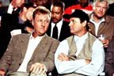
O Pernalonga meteu a si mesmo e seus amigos numa enrascada. Os Nerdlucks, uma gangue de pequenos alienígenas rabugentos, pousaram na Terra a mando do chefe, o cruel Swackhammer (voz de Danny DeVito). O plano deles é sequestrar os Looney Tunes e levá-los para o Moron Mountain, o parque de diversões falido de Swackhammer.
O Pernalonga desafia os pequenos e fracos alienígenas para uma partida de basquete decisiva: se os Looney Tunes vencerem, ficam na Terra. Se perderem, vão parar nas mãos de Swackhammer.
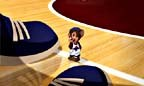
Os aliens aceitam o desafio rápido demais. O Pernalonga ainda não sabe que os Nerdlucks conseguem "absorver" habilidades. Eles roubam o talento de astros da NBA como Charles Barkley, Patrick Ewing, Muggsy Bogues, Larry Johnson e Shawn Bradley e se transformam nos gigantescos e poderosos Monstars!
O Pernalonga precisa de ajuda séria. Mas os melhores jogadores de basquete estão todos perdendo o talento... Bom, tem um jogador de beisebol que ele conhece.
Michael Jordan tinha se aposentado do basquete para jogar beisebol, com sucesso limitado. Os Looney Tunes o capturam num campo de golfe, levam-no para a Terra dos Looney Tunes e explicam o problema do seu jeitinho. Ele topa entrar no time (e o que mais poderia fazer? Eles não o deixam voltar para casa!).
A missão é enorme: o Eufrazino sai atirando para todo lado, o Taz não obedece a ninguém, o Coiote continua atrás do Papa-Léguas e o caos toma conta de tudo. Até que aparece a mais nova integrante do Tune Squad: Lola Bunny, craque das enterradas e a "coelha dos sonhos" do apaixonado Pernalonga.
Michael Jordan interpreta a si mesmo e contracena com Wayne Knight (de Seinfeld), como o assessor de imprensa Stan Podolak, e com Theresa Randle, como Juanita, esposa de Jordan.
Nenhuma turma de desenhos combina tanto com uma aventura esportiva maluca quanto os Looney Tunes, famosos há mais de meio século pela energia frenética e pelo humor inspirado.
A ideia veio de David Falk, advogado e empresário de Michael Jordan, e do seu sócio Ken Ross, que propuseram à Warner Bros. um filme juntando Jordan e os Looney Tunes. O estúdio procurava havia tempos um longa para os personagens e adorou a ideia.
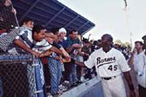
Para comandar o projeto, a Warner escolheu Ivan Reitman, responsável por algumas das comédias de maior sucesso da época.
"Os Looney Tunes, com a sua tradição de irreverência desde os anos 1940, sempre foram desenhos feitos para adultos. As crianças adoram, mas o humor deles sempre foi mais louco e moderno do que qualquer outro. Eu queria recuperar essa tradição com uma história para o público de hoje." (Ivan Reitman)
Reitman encomendou o roteiro e montou a equipe: os produtores Joe Medjuck e Daniel Goldberg e o diretor Joe Pytka, premiado pelo trabalho pioneiro misturando live-action e animação. Em um ano, as filmagens começaram nos estúdios da Warner em Burbank, na Califórnia.
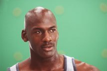
Organizar as filmagens foi o primeiro desafio. Era preciso respeitar a temporada de Jordan no Chicago Bulls e ainda dar tempo aos animadores para criar os personagens que contracenariam com atores já filmados.
O Stage 22 da Warner virou um enorme cenário de "tela verde". Ali, diante de paredes com uma grade desenhada para marcar a posição dos futuros personagens, Jordan jogou basquete com os colegas desenhados e contra os Monstars.
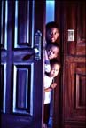
Dois terços das 60 diárias de filmagem aconteceram nesse estúdio, onde Jordan, Bill Murray e Wayne Knight eram os únicos atores "de verdade". Para guiar o olhar e as reações dos astros, atores vestidos de verde da cabeça aos pés ocupavam o lugar dos Looney Tunes e dos Monstars. Depois, eles sumiam na montagem.
Animadores ficavam no set o tempo todo: o diretor podia imprimir um quadro do filme e pedir que um animador desenhasse ali o personagem. Assim, dava para ter uma ideia da cena pronta meses antes.
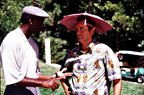
Fora do estúdio, as locações incluíram o Blair Field, em Long Beach, para as cenas de Jordan no time de beisebol Birmingham Barons, e o Lake Arrowhead Country Club, onde Jordan joga golfe com Bill Murray e Larry Bird antes de ser "sugado" para a Terra dos Looney Tunes.
Terminadas as filmagens, o foco passou para a animação e os efeitos visuais. Estúdios nos Estados Unidos, no Canadá e no Reino Unido trabalharam por cerca de mais 12 meses, combinando animação tradicional, computação gráfica (CGI) e efeitos especiais.
Tudo começava do jeito clássico, com lápis e papel. Os layouts desenhados à mão viravam cenários pintados; depois vinham a animação bruta, a limpeza dos traços e a animação de efeitos (sombras, brilhos e objetos). Por fim, tudo era escaneado e pintado no computador.
"Criamos dois universos de cor: cores primárias para os Looney Tunes e cores secundárias para os Monstars e o parque Moron Mountain. No total, fizemos entre 300 e 400 cenários." (Bill Perkins, diretor de arte da animação)
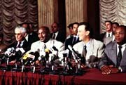
Na Cinesite, o material era digitalizado e combinado às cenas filmadas. Para a cena em que Stan é inflado pelos Looney Tunes, o rosto de Wayne Knight foi escaneado em 3D. Já a torcida do jogo mistura personagens desenhados, personagens em 3D e pessoas reais usando máscaras.
Reitman escalou atores com talento para comédia e improviso para dar vida aos personagens, à altura do lendário Mel Blanc:
- Billy West: Pernalonga e Hortelino Troca-Letras
- Dee Bradley Baker: Patolino, Taz e Bull
- Bob Bergen: Bertie, Hubie, Marvin, o Marciano, Gaguinho, Ligeirinho e Piu-Piu
- Bill Farmer: Frajola, Eufrazino Puxa-Briga e Frangolino
- Kath Soucie: Lola Bunny
- Danny DeVito: Swackhammer
"Foi uma mistura do velho e do novo que, acredito, vai aumentar o encanto eterno da animação como entretenimento." (Ivan Reitman)
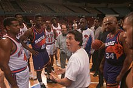
Ivan Reitman
Produtor
Diretor e produtor de algumas das comédias mais queridas do cinema americano, como Os Caça-Fantasmas, Irmãos Gêmeos, Um Tira no Jardim de Infância e Dave. Também produziu O Clube dos Cafajestes e Beethoven. Nasceu na antiga Tchecoslováquia e fugiu com a família para o Canadá aos 4 anos.
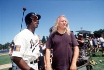
Joe Pytka
Diretor
Considerado o maior diretor de comerciais de TV, com mais de 5.000 filmes publicitários, entre eles o famoso "Nothing but net", com Michael Jordan e Larry Bird, para o McDonald's. Space Jam foi apenas o seu segundo longa-metragem.
Ver a equipe completa (15 pessoas)
| Nome | Função | Você talvez conheça por... |
|---|---|---|
| Joe Medjuck | Produtor | Parceiro de longa data de Reitman; produziu Beethoven e Beethoven 2 |
| Daniel Goldberg | Produtor | Roteirista de Almôndegas e Recrutas da Pesada |
| David Falk | Produtor executivo | Advogado e empresário de Michael Jordan |
| Ken Ross | Produtor executivo | Criou a série de vídeos campeões de venda de Michael Jordan |
| Geoffrey Kirkland | Design de produção | Indicado ao Oscar por Os Eleitos |
| Michael Chapman | Diretor de fotografia | Indicado ao Oscar por Touro Indomável e O Fugitivo |
| Sheldon Kahn | Montador e coprodutor | Indicado ao Oscar por Um Estranho no Ninho e Entre Dois Amores |
| Gordon Webb | Coprodutor | Trabalhou em Dave, Irmãos Gêmeos e Os Caça-Fantasmas II |
| Curtis Polk | Coprodutor | Negociou quatro dos cinco maiores contratos da NBA até 1996 |
| James Newton Howard | Música | Indicado ao Oscar por O Príncipe das Marés e O Fugitivo |
| Bruce Smith | Codiretor de animação | Animador de Uma Cilada para Roger Rabbit |
| Tony Cervone | Codiretor de animação | Animador de Tiny Toon Adventures e Animaniacs |
| Ron Tippe | Produtor de animação | Produziu o curta do Mickey Runaway Brain, indicado ao Oscar |
| Bill Perkins | Diretor de arte da animação | Diretor de arte de Aladdin |
| Ed Jones | Efeitos visuais | Ganhou o Oscar por Uma Cilada para Roger Rabbit; fundou a Cinesite |
Os dois minutos de trailer mais animados que já passaram num cinema. Em 1996, era um arquivo QuickTime de 7,5 MB para baixar. Hoje, é só dar o play:
O vídeo não carregou? Assista no YouTube . Os extras do making of estão nos Bastidores.
Graças ao milagre dos computadores, live-action e animação aparecem juntos na telona como nunca antes. Clique em uma foto para ampliar. Fotos de Bruce Talamon.